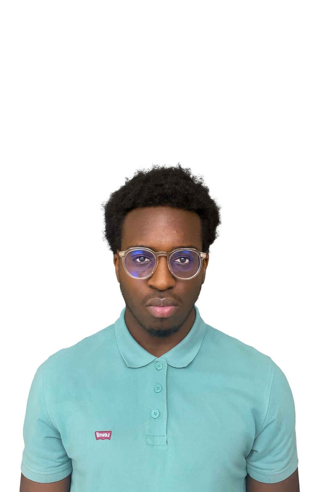

// Portfolio de Yannis
Rukiramarigo
Yannis
Étudiant BUT Réseaux & Télécommunications — Parcours Cybersécurité
Ce portfolio académique documente ma progression, mes analyses réflexives et mes compétences développées au cours de ma formation en BUT R&T, à travers mes Projets (Situations d'Apprentissage et d'Évaluation) du Semestre 1.

// 01 — Mes Projets (Semestre 1)
Projets d'Apprentissage & Évaluation
Chaque projet est une mise en situation professionnelle où j'applique mes connaissances techniques pour relever des défis concrets.
Se sensibiliser à l’hygiène informatique
But : Sensibiliser aux bonnes pratiques de cybersécurité et aux enjeux de l'hygiène numérique.
S’initier aux réseaux informatiques
But : Installation de postes clients et configuration de base d'un réseau local.
Découvrir un dispositif de transmission
But : Mesure de signaux et déploiement de supports de transmission de données.
Se présenter sur Internet
But : Création d'un site web et maîtrise des technologies de l'Internet.
Traiter des données
But : Utilisation d'outils informatiques pour le traitement et la gestion de données.